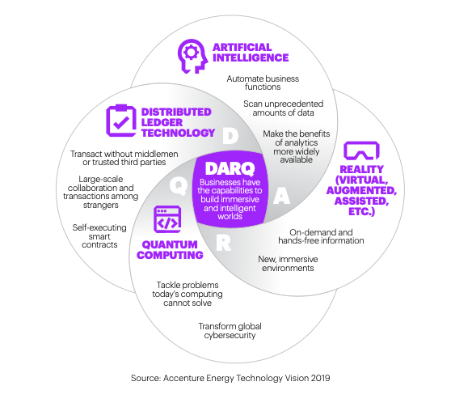
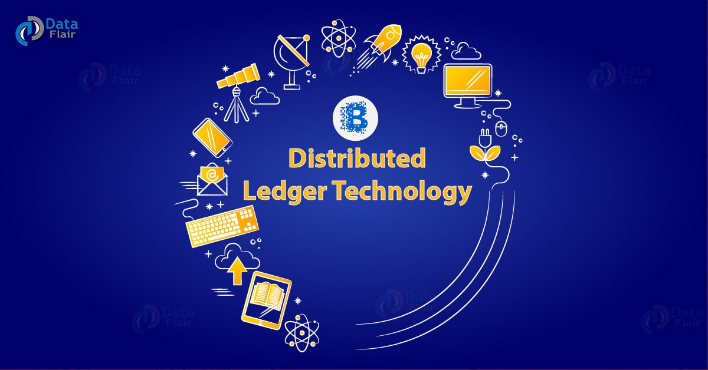
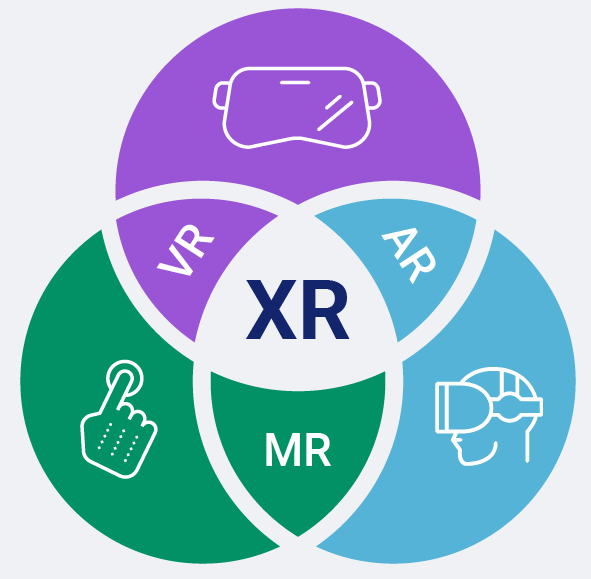

DARQ
"The Future Of Technology"
DARQ is most advanced and emerging technologies streaming today. It is roughly referred to as Distributed Ledger Technologies, which include technologies such as Artificial Intelligence (AR), Blockchain, Cryptocurrency, Extended Reality, and Quantum Computing.These all technologies together are known as DARQ.
1. DISTRIBUTED LEDGER TECHNOLOGY (DLT)
So what is a Ledger? Ledger is a Database or Recordbook for example Transaction details, Bank account details, Sales details and many more..
Now the problem is that what if this data gets hacked,manipulated or corrupted.To resolve this DLT was introduced.
DLT is a type of Transactional technology which allows us to store and transfer data in a secure and accurate manner.The examples of DLT are CRYPTOCURRENCY and BLOCKCHAIN.
In this technology data is distributed, not centralised.Data is stored in different locations,known as nodes.These nodes are interconnected to each other and any change in database is updated in every node within seconds.Data is protected by advanced cryptographic algorithms.By using DLT any change in ledger can be traced which makes the system transparent.
Government agencies and many other private companies are using this technology.Government of Andhra pradesh started a project of storing the land resource ownership data in the form of blockchain.DLT will bring revolution in many fields like:
- Banking
- Finance
- Medical field
2. ARTIFICIAL INTELLIGENCE(AI)
Artificial Intelligence is an area of computer science that emphasizes the creation of intelligent machines that work and react like humans according to the situation they are given. Machines can work or act like a human if they have abundant information relating to the world. AI has thinking ability and decision making power.It was created to work like the human brain. let's see how it is done.
- Hear and Read :By NLP and Speech Recognition.
- Motion : By using Robotics.
- Image Interpretation : By Image Processing.
- Identifying Patterns : By Pattern Recognition.
- Remembering past : By RNN(Recurrent Neural Network).
Nowadays AI is used in so many places like face recognition which is used in Cameras,Natural language processing and Speech Recognition used in Google assistant and Siri, Robotics which is used in industries and many more. In the coming future AI will be used everywhere like weapons,forecasting,autonomous vehicles,scientific research, manufacturing and many more…
3. EXTENDED REALITY
To understand Extended Reality first we have to understand Virtual reality(VR),Augmented Reality(AG),Mixed Reality(MR).
VIRTUAL REALITY(VR)
Virtual reality is to create a simulated environment that is observed by the human with the help of a lens or a project. The graphics are cloned in such a condition that they pretend to be the exact situation for the viewer.3D interactive environment and 360 makes it realistic and we enjoy the world we wish to see in the real world. Applications:-Gaming,3D model visualization helps in research work,Military training,Education field,Entertainment(eg.3D movies).
AUGMENTED REALITY
Augmented reality is the blending of interactive digital elements – like dazzling visual overlays, buzzy haptic feedback, or other sensory projections – into our real-world environments.Snapchat filters and Pokemon go game are some examples of AR.
MIXED REALITY(MR)
Mixed reality (MR) is the merging of real and virtual worlds to produce new environments and visualizations, where physical and digital objects co-exist and interact in real time In MR virtual world objects interact or respond to the action made by the real world objects. Applications:-GPS,Defence systems,Security,Education and many more…
Extended reality(XR):
It is a combination of all Virtual reality(VR),AUGMENTED REALITY and Mixed Reality(MR).XR blends real and virtual worlds to create an immersive experience. XR connects and engages customers at deeper, more meaningful levels.
4. Quantum Computing (QC)

Size of computers are getting smaller day by day due to transistor size used in processors.Earlier the size transistor used to be large but now the size of transistors is very small upto 9nm or 12nm.
To make the processors more smaller atomic or subatomic particles that exhibit quantum behaviours are used as transistors.These are known as Quantum bits or Qbits.Qbits can be atoms,molecules or electrons.These Qbits are used in quantum computing based on two principles Superposition and Entanglement.
In normal computer bits are either zero or one but in quantum computing Qbits range from zero to one means they can have any value between zero and one this property is known as Superposition.
The states of Qbits can be determined only in the reference of other Qbits.This Property is known as Entanglement.
Due to these properties Quantum Computers are able to handle a large number of processes at once.
But Quantum Computers require absolute zero temperature for functioning with full efficiency.
Currently Google is using a Quantum Computer for optimization of AI algorithms and faster web search results.whereas NASA is using quantum computers for advance mission planning,Image processing and Air traffic control.
But there is a lot of research needed for efficient uses of Quantum Computers.
Now imagine Distributed ledger technology network powered by Artificial Intelligence and they are accessed using Extended reality and are computed using Quantum computing.That's our Future.